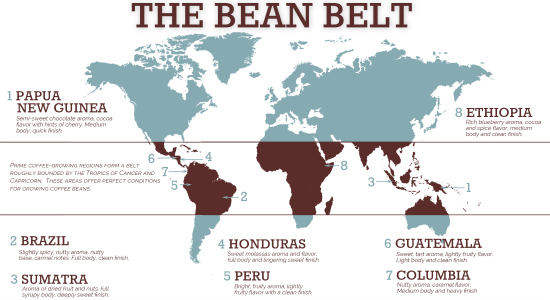

Ok. Said I do lot of things but in my heart I know really well I'm extremely lazy
Believe me: I prefer talk about something more interesting like music, motors, skating and even programming as well.
Anyway I love coffee and I'm pretty sure there are so many people like me in the world. I only hope this little article may be of some interest.
 Maybe you prefer tea or... how to disagree, a good beer.
Maybe you prefer tea or... how to disagree, a good beer.
Origin
Where Coffee Grows
The coffee tree is a tropical evergreen shrub (genus Coffea) and grows between the Tropics of Cancer and Capricorn.  The two most commercially important species grown are varieties of Coffea arabica (Arabicas) and Coffea canephora (Robustas). The average Arabica plant is a large bush with dark-green oval leaves. The fruits, or cherries, are rounded and mature in 7 to 9 months; they usually contain two flat seeds, the coffee beans. When only one bean develops it is called a peaberry. Robusta is a robust (sic!) shrub or small tree that grows up to 10 metres high. The fruits are rounded and take up to 11 months to mature; the seeds are oval in shape and smaller than Arabica seeds. Ideal average temperatures range between 15 to 24ºC for Arabica coffee and 24 to 30ºC for Robusta, which can flourish in hotter, harsher conditions. Coffee needs an annual rainfall of 1500 to 3000 mm, with Arabica needing less than other species. Whereas Robusta coffee can be grown between sea-level and about 800 metres, Arabica does best at higher altitudes and is often grown in hilly areas.
Harvesting
As coffee is often grown in mountainous areas, widespread use of mechanical harvesters is not possible and the ripe coffee cherries are usually picked by hand. The main exception is Brazil, where the relatively flat landscape and immense size of the coffee fields allow for machinery use. Coffee trees yield an average of 2 to 4 kilos of cherries and a good picker can harvest 45 to 90 kilos of coffee cherry per day; this will produce nine to 18 kilos of coffee beans.
Coffee is harvested in one of two ways:
- Strip Picked
all the cherries are stripped off of the branch at one time, either by machine or by hand. - Selectively Picked
only the ripe cherries are harvested and they are picked by hand.
Pickers check the trees every 8 to 10 days and individually pick only the fully ripe cherries. This method is labour intensive and more costly. Selective picking is primarily used for the finer Arabica beans.
Locations
Coffee grows in around eighty countries in South and Central America, the Caribbean, Africa and Asia. Arabica coffee accounts for about three-quarters of coffee cultivated worldwide. It is grown throughout Latin America, Central and East Africa, India and, to some extent, Indonesia. Robusta coffee is grown in West and Central Africa, throughout South-East Asia and, to some extent. in Brazil. Brazil is the largest coffee exporting nation, but Vietnam tripled its exports between 1995 and 1999, and became a major producer of Robusta beans. Indonesia is the third-largest exporter and the largest producer of washed Arabica coffee.
When Is Coffee Harvested?
In most countries, coffee is harvested once per year. Some countries, however, have climates that are conducive to growing coffee nearly all year long. In these countries, there is a smaller secondary crop, called the fly crop. Here are some of the most well-known coffee growing countries along with their harvest seasons.
| Country | Main Crop | Fly Crop |
|---|---|---|
| Brazil | May – September | N/A |
| Colombia | September – January | March – June |
| Costa Rica | October – Marcn | N/A |
| Guatemala | September – April | N/A |
| Honduras | September – February | N/A |
| Mexico | September – March | N/A |
| Peru | June – November | N/A |
| Hawaii | October – March | N/A |
| Sumatra | October – March | N/A |
| Ethiopia | November – Feburary | N/A |
| Kenya | October – March | May – August |
| Tanzania | October – February | N/A |
| Yemen | October – December | N/A |
| Jamaica | December – March | N/A |
...and...
When during a harvest a coffee is picked affects both its quality and taste. Its most important that farmers pick beans when they’re ripe, as these will produce the highest quality crop. It’s almost impossible to have a few under- or overripe cherries in a lot, but these should be kept to a small percentage of the lot. As a cherries mature, the flavors in beans, which are the pits of coffee cherries, also develop. For instance, citric acid (the same acid that’s in citrus fruits) is present in high concentrations in young coffee cherries, and beans often have citrus notes if they’re harvested early. As the cherries mature, the prevalence of citric acid diminishes and the bean’s become less acidic. Differences like these are especially pronounced in naturally processed beans, which are allowed to soak in the fruit’s juices before being depulped.